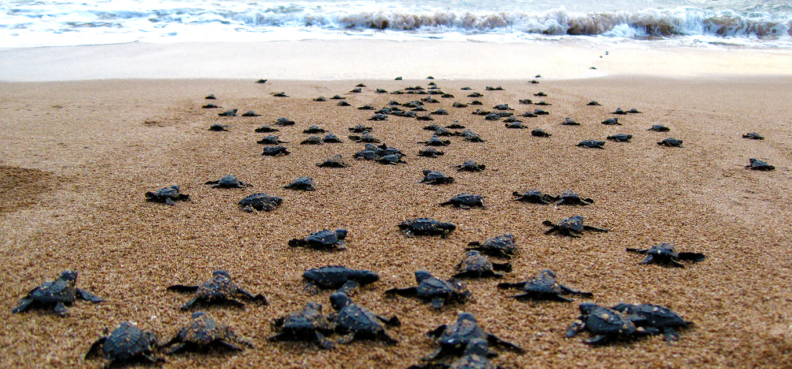

About Bentota Beach
A well-known beach resort may be found on Sri Lanka's southwest coast at Bentota Beach. It is located around 65 kilometers south of the nation's capital, Colombo. Bentota Beach is popular with both national and international visitors because of its immaculate sandy beach, clean waters, and lovely surroundings.
Bentota Sea Turtle Project

Sea turtle eggs are relocated to sheltered spaces inside the hatchery from nesting locations along the shore. By doing this, the eggs are protected from both natural predators and human disruptions. The young are housed in tanks after the eggs hatch until they are strong enough to be released into the ocean. Injured turtles are also looked after at the hatchery and given medical attention before being returned to their natural habitat.
More Over...
Visitors to these conservation programs get the opportunity to learn about sea turtles, see turtles nesting, help release hatchlings into the ocean, and donate money or volunteer their time.
You can visit us!
Open time: 09:00am to 05:00pm
Entry Fee: 900LKR
Contact us!
Ad : Galle Road, Bentota, Sri Lanka
Tel: +94 51 234 567